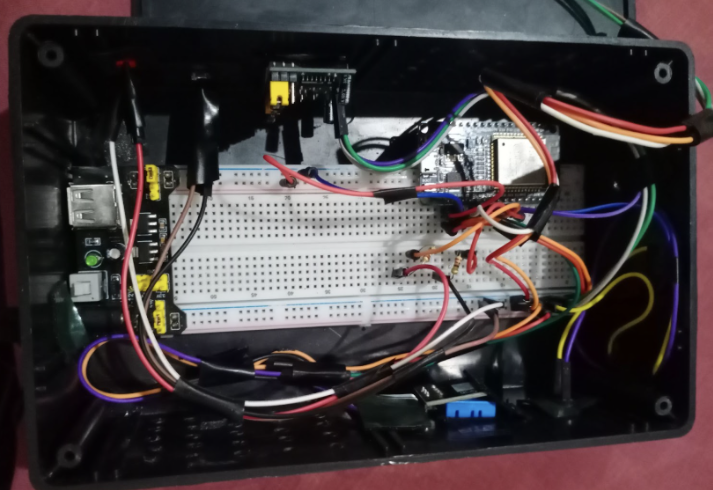
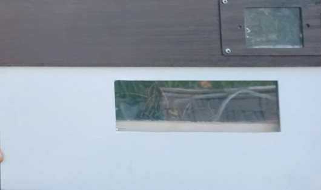

Selected Projects

Yo-Tukang!
A home service marketplace app connecting users with reliable handymen. I developed the task flows and conducted detailed usability analysis.
View Figma File →
PANDA (SIC Batch 7)
National Finalist Stage 4. An IoT innovation project focused on smart community solutions using electronics and creative problem solving.

Netes.io
Collaborated as a QA specialist to ensure software reliability through rigorous manual testing and bug identification.